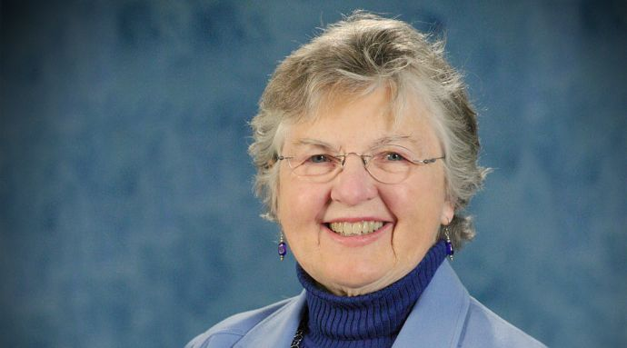

| 10 Mujeres que marcaron la historia de la Informática |
| Ada Lovelace |
 |
Fue la primera programadora de la historia. Amante de las
matemáticas y de las ciencias, descubrió un lenguaje de
programación cuyos aportes marcaron precedentes dentro de
la informática. Estados Unidos creó un lenguaje que bautizó
como Ada en su honor. Se la conoce como la “madre de la
computación”. Se dice que Lovelace detectó el primer “bug”
de la informática en su máquina.
|
| Hedy Lemarr |
|
Es una estrella del cine clásico de Hollywood. Además de
esto, desde pequeña Hedy destacó por su inteligencia y fue
considerada por sus profesores como superdotada. Fue Lemarr
la responsable de crear el espectro ensanchado por salto de
frecuencia, que sirvió como base, para desarrollar tecnologías
como el Bluetooth, el GPS y las conexiones WiFi.
|
| Jude Milhon |
|
Jude Milhon, más conocida en la red por su pseudónimo St. Jude,
era una famosa hacker y defensora de los derechos personales
en internet. Fue la autora del término ciberpunk, y miembro
fundador del grupo con el mismo nombre. Programadora, escritora,
rebelde, defensora de los ciberderechos.
|
| Evelyn Berezin |
|
Creó el que se considera el primer ordenador de oficina. En 1968,
se le ocurrió crear un programa para gestionar y crear textos
que pudiese ayudar a las secretarias en el desempeño de su
trabajo. Además de esto, es la creadora del primer sistema de
reserva de vuelos, realizado para una aerolínea norteamericana.
|
| Lynn Conway |
|
Pionera en el campo de la arquitectura de computadores y la
microelectrónica. Gran parte de la evolución en el diseño de
chips de sicilio se basa en su trabajo y muchos diseñadores han
estudiado con el libro Introducción a sistemas VLSI del que es
coautora. En 1965 participó en el primer ordenador superescalar.
|
| Frances E. Allen |
 |
Sentó las bases teóricas y prácticas de las técnicas de optimización
automática en compiladroes, la parte de un ordenador que traduce
las instrucciones de un programa a un código entendible por la
máquina. Definió unas técnicas que se siguen utilizando a día de
hoy y que han ayudado a aumentar la eficiencia de las máquinas.
|
| Grace Murray Hopper |
|
Está considerada como la precursora del lenguaje COBOL, un lenguaje
de programación universal e inédito pensado para facilitar el
desarrollo de programas para personas sin conocimientos específicos
de informática. Científica matemática y militar con grado de
almirante en el ejército estadounidense, fue muy influyente en
las Fuerzas Armadas y en muchas empresas, dominadas abrumadoramente
por hombres.
|
| Joan Clarke |
 |
Fue una de las mujeres involucradas en descifrar el código Enigma,
(sí, el mismo de la película que probablemente viste en el cine
hace unos años) pero ella a diferencia de las demás fue la única
que estuvo en el centro neurológico del proyecto. Es decir, que
trabajó mano a mano con Turing y el resto de los científicos
científicos que ayudaron a descifrar este código y salvar miles
de vidas. A pesar de la fuerte desigualdad de género existente en
esa época, los compañeros de Clarke siempre la consideraron una más.
|
| Radia Perlman |
 |
Es considerada “La madre del Internet” pero a ella no le agrada
nada ese título, pues aparte de que hace referencia a su género,
hace creer que es todo su mérito, lo cual no es así.. Mientras
trabajaba para la Digital Equipment Corporation, inventó el protocolo
Spanning Tree (STP) que transformó el funcionamiento del Ethernet.
Y derivó en que hasta el día de hoy, todo podamos disfrutar de una
conexión a Internet. ¡Gracias infinitas a Perlman!
|
| Margaret Hamilton |
|
Fue su código el que llevó al hombre a la Luna. Hamilton llegó a
estar a cargo de la dirección y supervisión del software de las
misiones Apolo de la NASA. Las imágenes que conocemos del primer
hombre en la Luna no habrían sucedido de no ser por Hamilton y su
equipo. A pesar de ser algo raro en la época, Hamilton era una
veinteañera que trabajaba siendo madre y solía llevar a su hija a
pasar el tiempo en el laboratorio del MIT.
|